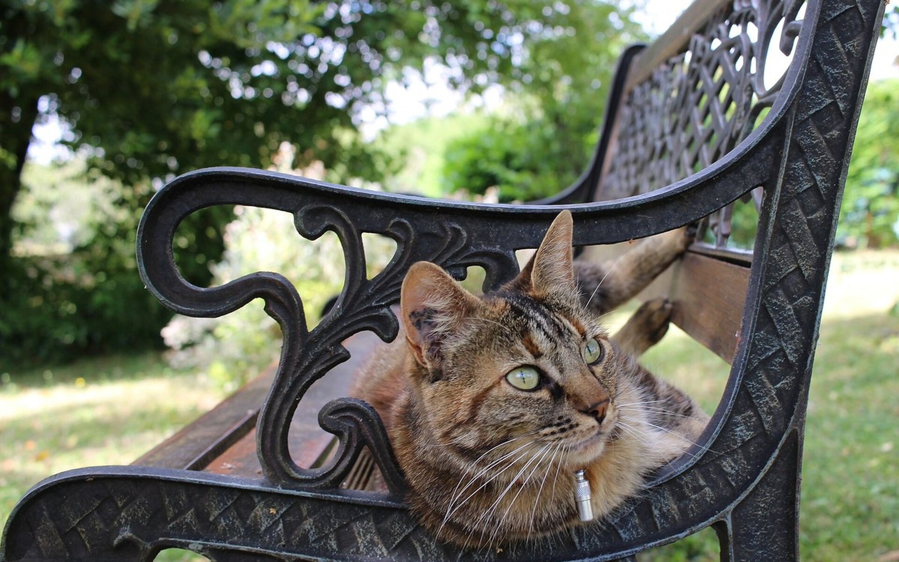

Большинство хозяев убеждены: кошка мурлычет — значит, счастлива. Это верно в половине случаев. Остальные типы мурлыканья сигнализируют о голоде, стрессе, боли или серьёзном заболевании. Проблема в том, что звуки похожи, а разница — в частоте, ритме и контексте. AI-переводчик AnimaLife распознаёт эти паттерны. Вот что он слышит и как это читать.
Мурлыканье — не просто вибрация. Кошка производит его через ритмичные сокращения мышц гортани (laryngeal dilator muscles) с частотой 25-150 раз в секунду. Эти сокращения расширяют и сужают голосовую щель при каждом вдохе и выдохе — отсюда характерное непрерывное звучание. Ни одно другое млекопитающее не делает этого таким способом.
Важный факт: кошки мурлычут на вдохе и на выдохе одновременно — непрерывно. Большие кошки (льво, тигры) мурлычут только на выдохе. Это эволюционная особенность именно домашней кошки.
Диапазон частот мурлыканья — 25-150 Гц, чаще всего 25-50 Гц. Но внутри этого диапазона разные типы звучат совершенно по-разному — если знать, что слушать.
Частота: 25-50 Гц. Ритм ровный, глубокий, без резких пиков. Длится долго — кошка может мурлыкать 20-30 минут без остановки. Появляется, когда кошке тепло, она сыта, в контакте с хозяином или в безопасном месте.
Как узнать: кошка расслаблена телом — глаза полузакрыты или закрыты, уши вперёд или слегка в стороны (но не прижаты), хвост спокойный. Она не ищет еду, не беспокоится, просто существует рядом.
Что это значит для вас: ровно то, что кажется. Кошке хорошо. Этот тип мурлыканья действительно снижает у человека кортизол — исследования 2023 года (University of Vienna) подтвердили: 10 минут контакта с мурлыкающей кошкой снижают уровень стрессового гормона на 12-15%.
Частота: 220-520 Гц (значительно выше стандартного). Именно это мурлыканье большинство хозяев слышат утром, когда кошка хочет есть. Впервые описано в исследовании Karen McComb (University of Sussex, 2009) — и с тех пор считается самым изученным «манипулятивным» звуком кошки.
Внутри этого мурлыканья зашит высокочастотный компонент — фактически плач или мяуканье, встроенное в мурлыканье. Частота этого компонента (300-600 Гц) совпадает с диапазоном детского плача, на который человеческий мозг реагирует инстинктивно. Кошка, по сути, нажимает на встроенную кнопку родительского инстинкта.
Как узнать: звук более настойчивый, слегка «нытьевой» на слух. Кошка при этом активна, смотрит на вас или на миску, может ходить вокруг ног. Контекст — всегда просьба: еда, выход, внимание, дверь.
Что делать: кормить по расписанию, а не по мурлыканью — иначе кошка быстро понимает, что схема работает, и переходит на неё постоянно. AnimaLife напоминает о времени кормления, чтобы не было этих переговоров.
Частота: 25-50 Гц — та же, что у мурлыканья удовлетворения. Именно поэтому его сложнее всего распознать без контекста. Кошки мурлычут, когда им больно, когда они умирают и когда рожают котят. Это не парадокс — это самоуспокоение и попытка снять боль.
Мурлыканье на частоте 25-50 Гц стимулирует выброс эндорфинов и ускоряет регенерацию тканей — такой механизм самолечения. Коты, получившие травму, мурлычут интенсивнее здоровых.
Как отличить от мурлыканья удовлетворения:
Это критически важный сигнал, который чаще всего игнорируют, потому что «мурлычет — значит, нормально». Неправильная интерпретация задерживает помощь на часы и дни.
Частота: 25-35 Гц, очень низкая и ритмичная. Этот тип слышен реже всего — только от некастрированных самок с пометом. Кошка-мать мурлычет котятам, которые ещё слепые и глухие, вибрацией направляя их к себе. Котята ориентируются по вибрации через лапы и грудную клетку, прежде чем у них открываются глаза.
Если вы слышите подобный звук от стерилизованной кошки без котят — она может переносить «материнский» паттерн на игрушки, котят других животных или просто на тихий одинокий вечер. Это нормальная поведенческая вариация.
Частота: нерегулярная, с прерываниями. Мурлыканье звучит неровно, как заевшая запись — прерывается, меняет темп. Возникает в стрессовых ситуациях: ветеринарная клиника, переезд, появление нового животного или человека, гроза, ремонт.
Что это значит: кошка пытается успокоить себя, но нервная система не позволяет держать ровный ритм. Это сигнал тревоги, а не удовольствия.
Что делать: убрать источник стресса, создать безопасное укрытие (коробка, переноска с открытой дверью, высокая полка). Феромонные диффузоры Feliway Classic (распылитель или плагин в розетку) снижают уровень тревоги за 24-48 часов. При регулярном тревожном поведении — консультация с ветеринарным поведенческим специалистом.
Не каждое нестандартное мурлыканье требует паники, но есть комбинации, при которых нужно действовать быстро:
Человеческое ухо хорошо различает высоту и громкость. Плохо — частотный профиль, спектральную структуру и микровариации ритма. Именно в них закодирована информация о типе мурлыканья.
AI-переводчик AnimaLife анализирует запись по нескольким параметрам одновременно: основная частота, наличие гармоник, регулярность ритма, нарастание/затухание, спектральный рисунок. Это позволяет различать типы мурлыканья даже при фоновом шуме квартиры.
Дополнительно учитывается контекст: время суток, данные из дневника питомца, последняя запись о кормлении и визите к врачу. Кошка мурлычет в 6 утра после пустой миски — с высокой вероятностью это solicitation purr. Та же кошка мурлычет через 2 часа после визита к ветеринару — вероятно, самоуспокоение.
Не игнорировать мурлыканье, которое появилось впервые или изменилось. Кошки — существа привычки. Новый звук — всегда новый сигнал. Не интерпретировать мурлыканье в отрыве от тела: напряжённая поза и расширенные зрачки меняют смысл любого звука. Не «успокаивать» мурлычащую кошку в стрессе навязчивыми объятиями — это усиливает тревогу. Не кормить в ответ на solicitation purr в произвольное время — вы обучаете кошку манипуляции, а не удовлетворяете её потребность.
Мурлыканье — богатейший язык, который большинство людей слышат как один монотонный звук. Пять минут внимания к тому, как именно мурлычит кошка, дают больше информации о её состоянии, чем часы наблюдения без фокуса.